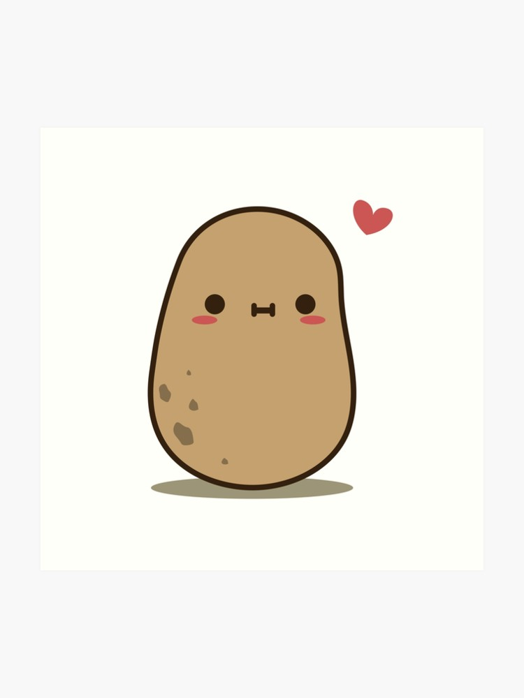
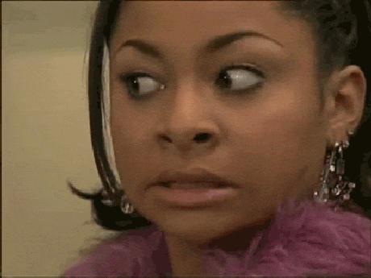

To start, I have always been an aimless person who is uncertain of what to do. I have always been described as one of those bright, gifted, intelligent children who will be successful and rich and bring positive change to those around me. I never complained about these descriptions, although it did make me feel like I had a lot to live up to despite the fact that I generally tend to describe myself as a bland, cranky, distracted, potato-like individual.

So cute. So starchy.
However, I knew that I could not go through life simply accepting my self-imposed potato lifestyle, and my parents expected a lot from me, so I generally had the idea that I should go to college. I didn't have any idea of what I wanted to study. I was not confident in my skills and felt overwhelmed by the options I suddenly was made aware of halfway through my senior year of high school. I was constantly frustrated with my classes, not because of what I was taking, but because I struggled to find realistic applications for most of them in adult life. I wanted to take a year off to work some part time job and think about what I might want to get into, but unfortunately I had scholarships that wouldn't wait and parents who feared that if I didn't immediately start college, I would never start, and that I would be stuck in some low-end job I hated for the rest of my life.
18-year-old me thought this was ridiculous, but I knew that I wouldn't hear the end of it if I lost my few scholarships in favor of working at a Target or something for $8 an hour, so I went on to college. I knew I liked to draw. I've always enjoyed drawing. But I've never really branched out of the anime-esque style I developed in high school, and seeing Actual Art Kids display their portfolios made me uncertain of my own talent. However, I figured if I went to college for art, then my talent would grow. And what better school than the KC Art Institute, right?
The First Misstep
Well, I don't really need to go into all of the details, but ultimately, realizing that the combination of my lackluster portfolio, the fact that one year at KCAI was about $22,000, and the issue with my high school credits not transferring on time essentially destroyed that idea. But it was okay. As I was told by adults for a long time, as long as I get a degree in anything, jobs would want to hire me and train me because having a degree showed that I had discipline and drive, and that I was flexible in what I could learn.
But, I was a year and a half into college at this point, and I was anxious to transfer from my community college that I was attending for free into the local university. I didn't fully understand the value of a community college, especially since most of the classes I was taking there were essentially the high school credits that didn't show up on my transcript on time for some reason. I was bored. But I was still uncertain of myself. I had been also suggested that I study something like soft sciences or engineering, so I thought maybe environmental studies would be fine. It was an interesting subject I never got to take in high school, and I thought maybe I'd figure out what to do while I took classes.
Three years later and two semesters from completing my degree, I did not feel any better about my situation. I enjoyed some of my classes, but it never felt like I was getting prepared for a career. There were few job openings in the area, and even fewer that even remotely seemed like I would be eligible. I started to feel a little more uncertain.

It's okay. I'll be okay.
I began to think really hard. Should I stay, or should I change my major? Should I drop out? No, I can't do that. My scholarships are done. I'll owe on my student loans with no job. Better keep going to college.
Another Tumble
Around this time, I was informed by a friend that perhaps I should get into coding and programming since I had expressed a vague interest in tech. The little I dabbled with initially on my own time was fun and challenging, and I knew I wanted to learn more. So, I changed my major to computer science and thought I was set.
Nope.
Computer science at college was difficult. I understood that it was a logic puzzle, but I think I didn't appreciate the complexity and standards that went with it. Also, the pace that my courses went at, my lack of connection with my peers, and my dislike of learning programming with C++ and Assembly greatly hindered me.
I know it sounds like I was making excuses, but this was something I actually felt determined to learn, so I stuck with it for a while. But, the curriculum kept changing up on me and several courses I took ended up being complete jokes and wastes of money (in one junior-level elective course I took in 2016, I was learning extremely basic and outdated techniques in HTML to accommodate for the likes of Netscape and IE6). I was fed up but didn't know what to do. It didn't really seem like I could complain about the coursework without it being written off as me simply being frustrated with being unemployable.
After increased difficulties with my higher level courses and barely passing my lower level ones, I decided I would just get a general liberal arts degree and use the credits I did earn to get a minor in computer science. Unfortunately, this did not help my job search. Luckily, I was able to find jobs here and there just to keep a few personal things paid for, but I never was able to secure a 'career' job, so to speak.
I went back to school at Johnson County Community College a year later to get a certificate in web development, but yet again, job hunting did not go well. I was very aggravated at this point, but knew that I enjoyed developing front-end stuff. JavaScript seemed like a less difficult version of C++. I liked that I could directly affect HTML and CSS with it, since it helped me better visualize how my programs functioned. I knew I could figure out common coding problems if I spent time on it. I just never seemed like I could find the right combination of tools to make myself even get an interview.
The Light At the End?
Since I still wasn't having any luck, I deleted everything related to programming and decided I'd try college one more time. This time, I decided I'd use the little money I had left in student loans to study CAD. I'm almost done with the certificate, but... I'm not sure about it. Maybe I might find a little better luck since I'm doing an internship, but I still don't feel very confident about my future in it. I enjoyed learning the technologies, but I haven't really felt great in my internship since it covers a topic I've never once taken a course over, and connecting with my teammates has been haphazard at best. I've felt lost the entire semester. I know that impostor syndrome is a bad thing I deal with, but I still have the feeling that job hunting in this field isn't going to go well either.
So, here I am with about $60k in debt for pretty much no reason, working part time at a bar with no insurance, maintaining a similarly-aged car on its last legs, sustaining a year-long freak injury, and feeling pretty much hopeless. I knew that LaunchCode was going to offer a session in Kansas City again, and I'd tried to do coursework and career building with them in the past, but never had the time to budget out until this semester. I was uncertain of them at first, but I've had several friends who have gone through the program and wound up with jobs they love shortly after completing the program. I knew that if they could do it, I could too, especially since I already had a little bit of understanding of programming. When I saw the applications open up, I was on it. I had the time, the drive, the resources, and I knew I had to focus.
Thankfully, my application was successful, and I started putting my biggest focus on the course. I've loved it so far and I really am feeling good about my investment in the course. It all feels familiar, but far more essential, practical, and reassuring. I like the group of people that I've worked with. I like that the course connects and builds and leads you to understand a full stack development environment. I like that I get a challenge in logic. I look forward to every chapter and assignment and I really hope that this will lead to a career that will be stable and make me feel more certain and positive about myself. I already do feel better about myself, but, well, having a job that I like and offers benefits would be great too!